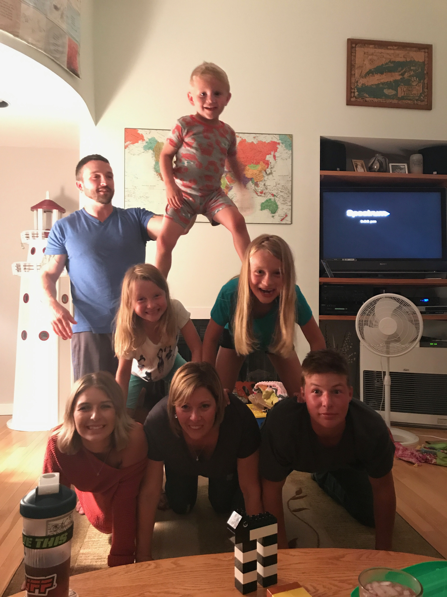
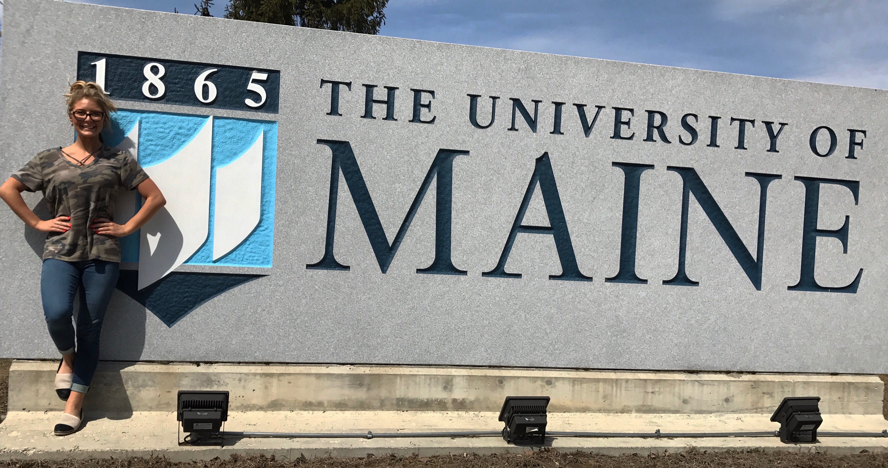

Myself
So as you already know my name is Haley, this page is going to get a little more into who I am. I was born in Utah on a military base because my Dad was an air craft maintenance officer in the air force. Shortly after I was born he got out and we moved to New Hampshire where my little brother Kyle was born. After our very short move to Albany, New York we moved Saco Maine where I love so much. I hope to stay here when I have a family of my own.
Family
I am a huge family person, nothing means more to me then my family. I have a very big family from Washington State, to Arizona, Connecticut, California and right here in Maine. But no matter what we all find a way to see each other at least once a year. I love being able to have so many people close to me. I have too many extended cousins to count but between my first cousins my brother and I are the oldest of nine with the youngest being one. It's too much fun getting to see them. Having everyone be in different states means lots of travel for us.
Travel
One of my biggest passions in life is for travel, so far I've been to a majority of the states, Mexico way too many times to count because my grandmother from Washington has a house there(I get my love for travel from her), Costa Rica and Punta Cana. I can't wait to see Europe and South America, I also hope to see Australia if I can past the long plane rides. One other thing I would love to do is study abroad for a semester, hopefully somewhere in Europe, such as Italy since I have two great friends from there.
Education
I went to Thornton Academy in Saco, Maine for High School which was an amazing experience because not only is it a semi-private school it has an exchange program with 3 dorms and a homestay program. This means I had the opportunity to meet amazing people from all over the world. On top of that my family has had two exchange students one from China and one from Italy and both times were amazing getting to learn such different cultures. Now I'm studying at University of Maine to get my Business management degree. Hopefully one day I'll own a salon of my own and be able to be an Aesthetician in that salon.